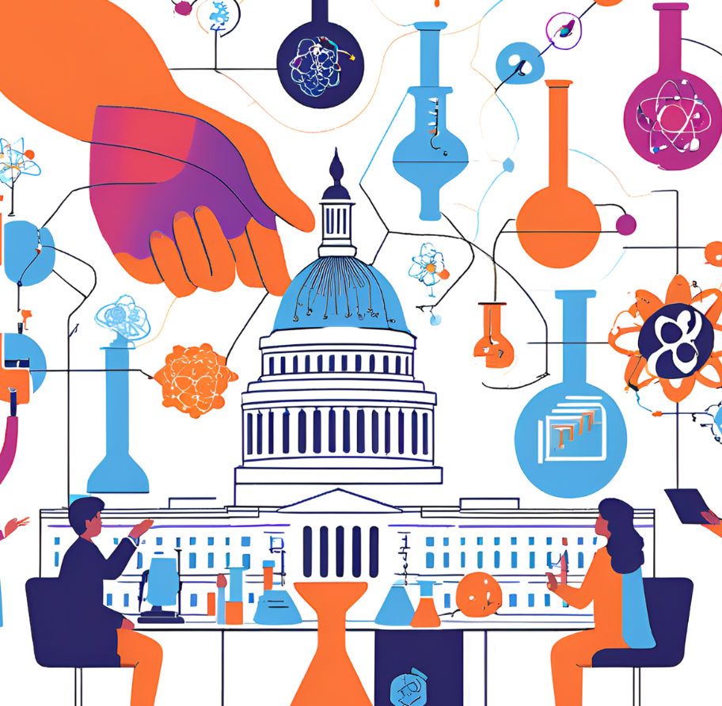
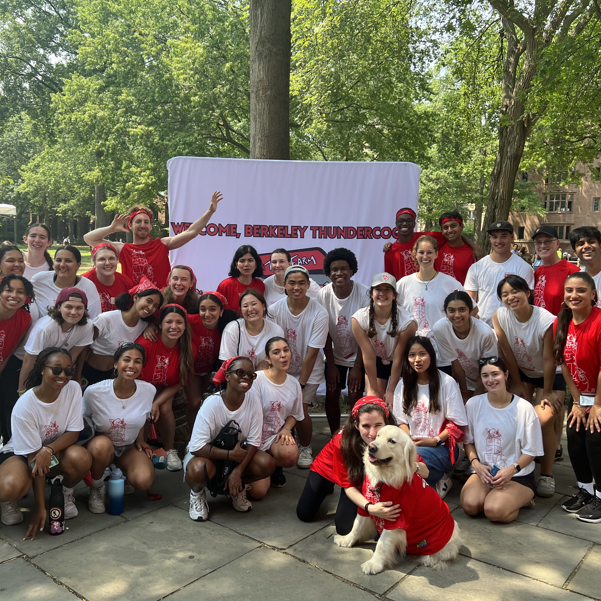
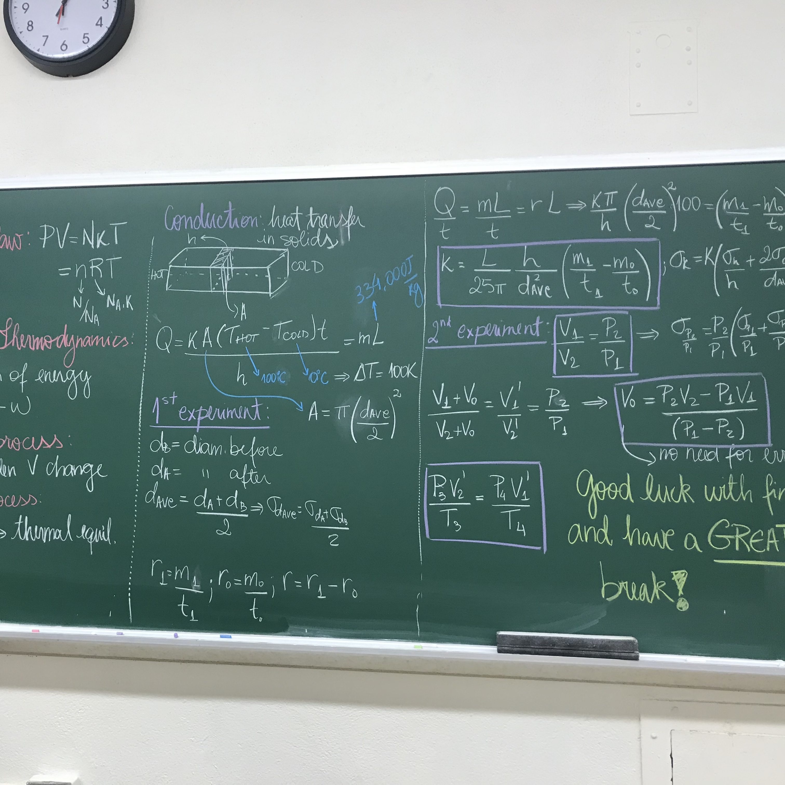
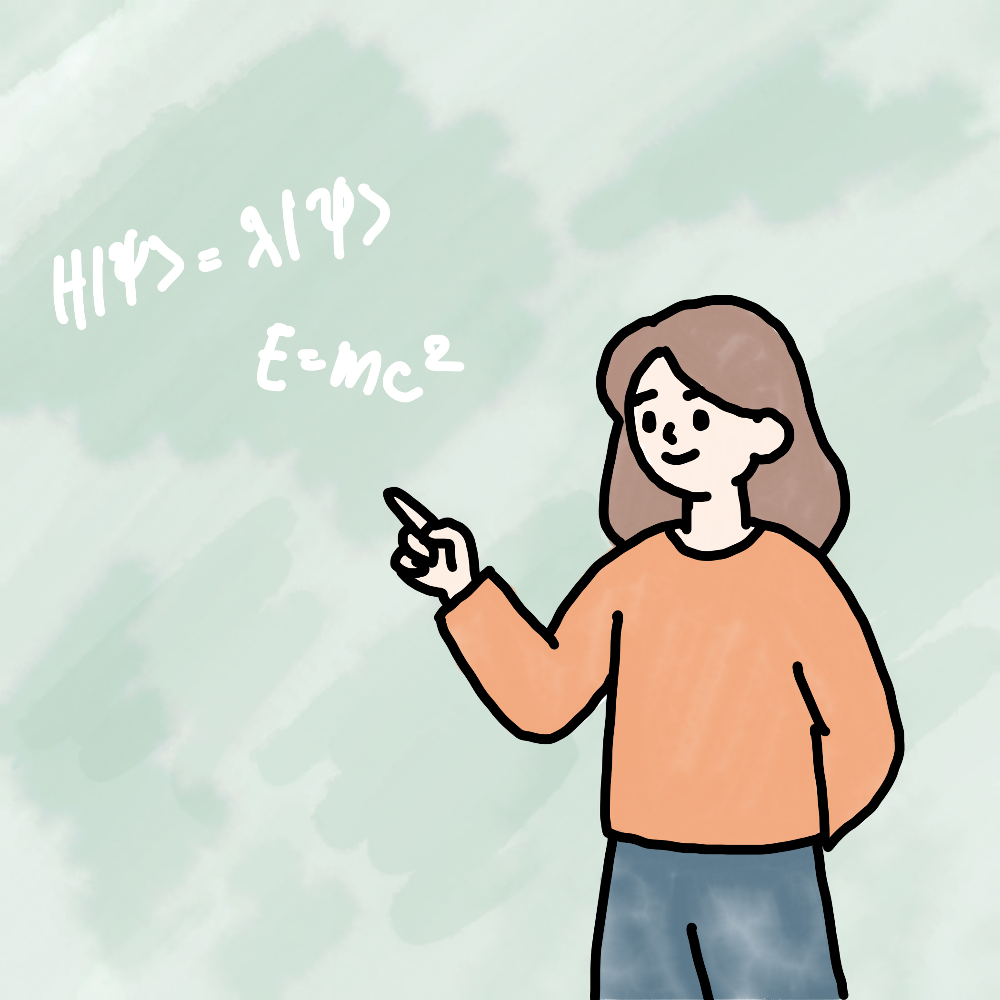
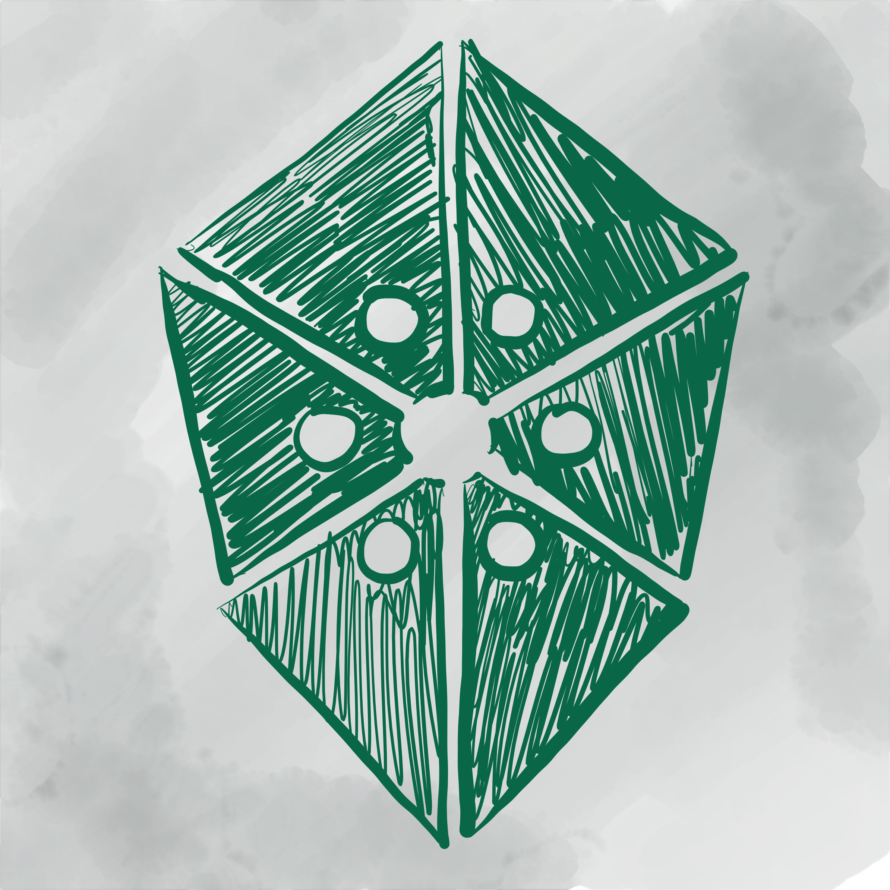
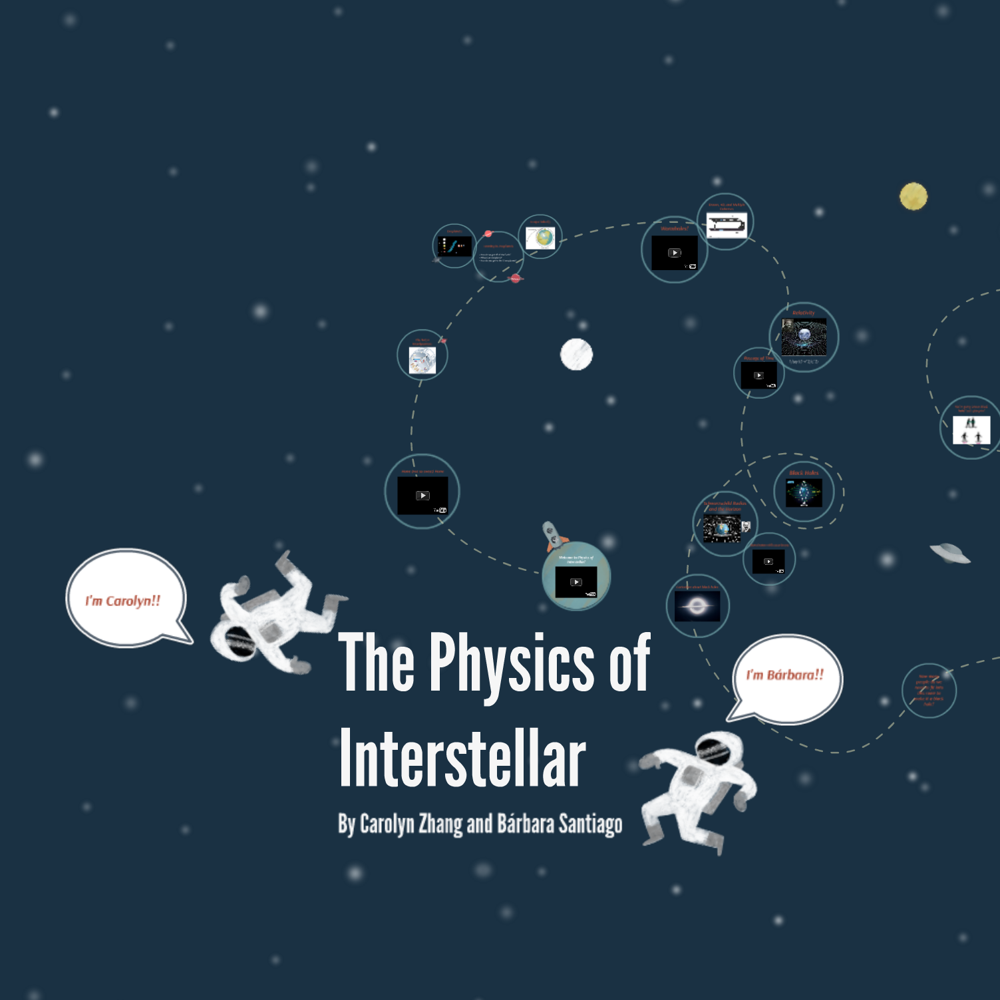
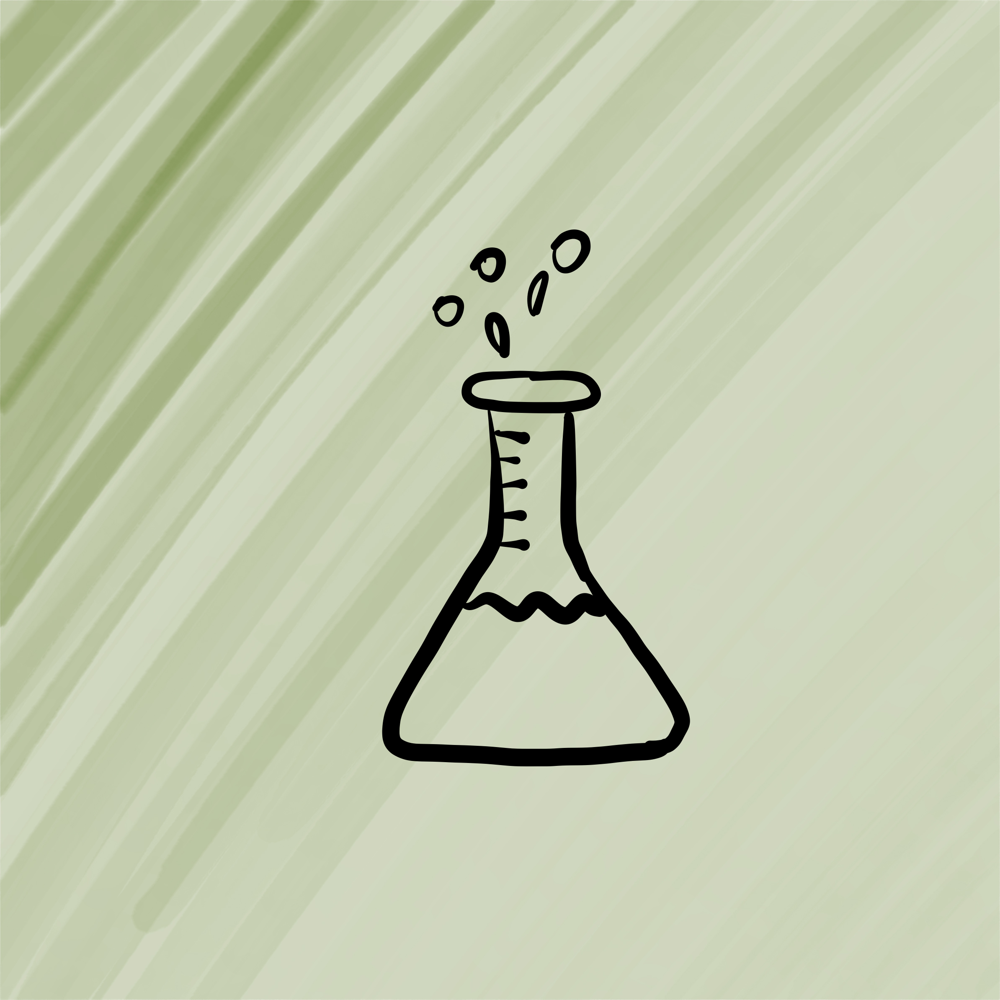
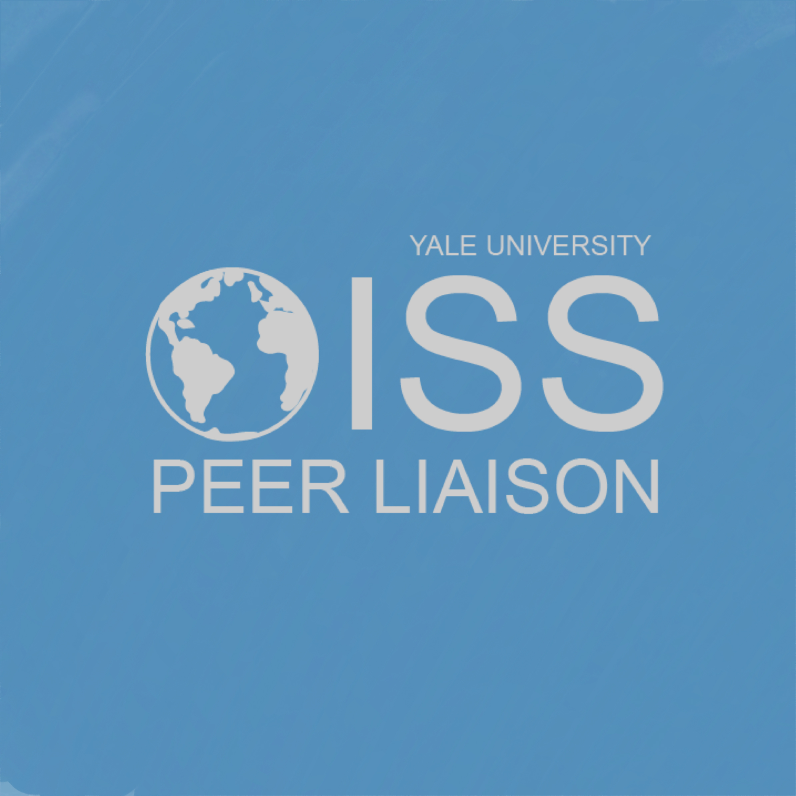

More information about mentoring in my Diversity in STEM page.

PHYS 3200: Physics and Public Policy
In the fall of 2025, I began teaching Physics and Public Policy at Yale. Inspired by a Physics Department science policy class from 2020, I significantly redesigned the course based on my experience in physics and nuclear security research and in advocacy. It connects physics concepts and experiments to policy initiatives in the U.S. and abroad, equipping students pursuing policymaking or scientific research with advocacy skills and the scientific foundation to form informed views on current science policy issues. Alongside physics topics including but not limited to large experiments, quantum information, satellite constellations, and nuclear science, students learn how to write memos for government officials, lobbying one pagers for congressional advocacy meetings, and op-eds to influence public opinion on science issues. The semester ends with a research paper and a presentation on a policy-relevant physics topic of each student's choice. I supervise two teaching assistants per term, and I've removed specific pages from the course evaluations posted below to protect their privacy.PHYS 3200 F25 REVIEWS PHYS 3200 F25 SYLLABUS

Yale Residential College Deanship
In the summer of 2024, I was appointed John B. Madden Dean of Berkeley College, one of Yale’s undergraduate residential colleges, serving as chief academic advisor to over 450 students. Beyond advising, deans manage all academic records for their college, teach in their academic disciplines, help coordinate emergency response, perform university committee service, and connect individual students to resources across Yale College—requiring close collaboration with virtually every Yale office. I currently teach in the Physics Department and serve on the STARS Program Advisory Board , Yale’s Admissions Committee, the Council of Heads of College Finance Committee, and Yale’s Fulbright Committee. As the only physicist in this role, I also frequently assist colleagues in other residential colleges with STEM student advising.As described in Yale Alumni Magazine (2000): deans are “a rare breed”: part parent, scholar, facilitator, minister, and vice principal, with a four-page formal job description. Living full-time in the colleges, they serve as “Yale’s first line of defense in ensuring the well-being of our students.” Undergraduates turn to deans for nearly everything — from letters of recommendation and community oversight to cheering athletic teams or playing intramural sports. A dean might offer a sympathetic ear at dinner one moment and rush a student to the emergency room the next, remaining on call 24 hours a day and prepared for every kind of situation.
YALE DAILY NEWS (2024) YALE DAILY NEWS (2025) YCDO ANNOUNCEMENT

Teaching Physics to First-Year Undergrads
As a first and second-year grad student, I taught different lab courses and recitations, including two semesters of introductory physics lab for pre-meds (PHYS 1291 and 1292), recitations for introductory mechanics for engineers (PHYS 1401) and recitations for introductory electromagnetism for pre-meds (PHYS 1202). I taught the latter in the Spring of 2020, so I had to teach part of it online during the COVID-19 pandemic; Columbia did not collect student reviews for classes that semester. In my first year, I was also tasked with staffing the physics lab library and help room, which are resources for students who need to prepare for upcoming lab sessions and to ask questions about any introductory physics classes respectively. Additionaly, I graded hundreds of introductory physics exams in my first year.PHYS 1291 REVIEWS PHYS 1292 REVIEWS PHYS 1401 REVIEWS

Undergraduate Course guest Lectures
Throughout my career, I have given a number of invited physics and nuclear security talks (some are listed in my CV). A few of them were guest lectures in other people's undergraduate courses. This included a joint BRICS nuclear security lecture given with Mahima Sikand in Rose Goettemoeller's course "INTLPOL 240 - Contemporary Issues in International Security" at Stanford in 2024 and one on dual-purpose research and nuclear proliferation I gave in Helen Canes's course "PHYS 0700 - Nuclear Physics: The Good, The Bad, and the Misunderstood" at Yale in 2024 and 2025.
SU(5): Graduate Peer Mentorship
I'm a co-founding organizer of SU(5), a free peer mentoring program to support physics and astronomy incoming grad students. First years are matched in groups of 4 incoming students from different universities across the US based on their background and needs. Each group is assigned a “mentor” who is an older grad student that will attend their first meeting and then follow up with their group biweekly to check in with first-years and make sure that they meet online among themselves. Each biweekly meeting will be about a specific topic, from personal issues like settling in a new place and making friends to academic concerns such as quals, classes, and research. It is a good opportunity to make connections, find people struggling through the same things, and brainstorm solutions for problems with people in other institutions who don’t have any stakes in your own department.SU(5) WEBSITE BLOG POST

The Physics of Insterstellar
In the Spring of 2015, I taught a class about the physics behind the movie "Interstellar" with my friend Carolyn Zhang for Splash at Yale. Splash is a program that brings hundreds of local middle and high school students to Yale's campus to take classes taught by Yale students on literally anything they are passionate about.VIEW SLIDES CLASS DESCRIPTION
Portuguese Tutoring
From my sophomore to my senior year in college, I tutored Portuguese to several students through the Yale Center for Language Study tutoring program as one of my student jobs. My tutees were in different levels (from beginner to advanced), and each one of them required a specific plan of study to achieve progress.YALE CLS WEBSITE

NEW HAVEN SCIENCE FAIR
In my senior year of college, I mentored a student in a New Haven magnet high school on a thermodynamic project for the New Haven Science Fair. In the months leading to the fair, I met the student roughly once a week in person at their school and communicated over email with them. They went on to get second place and an award for science communication at the event.READ ABOUT IT

Yale International Peer Liaison
As a junior, I served as a Peer Liaison to the Yale Office of International Students and Scholars (OISS). Peer Liaisons (PLs) are selected paid upper-level students who help connect first-years to resources and programming based in different Yale cultural centers throughout the entire year. In the capacity of OISS's PL, I integrated a team of 7 students who organized events and met with first-years (one-on-one and in groups) regularly, helping them navigate academic and personal difficulties of transitioning to college and moving to a different country.PL PROGRAM WEBSITE